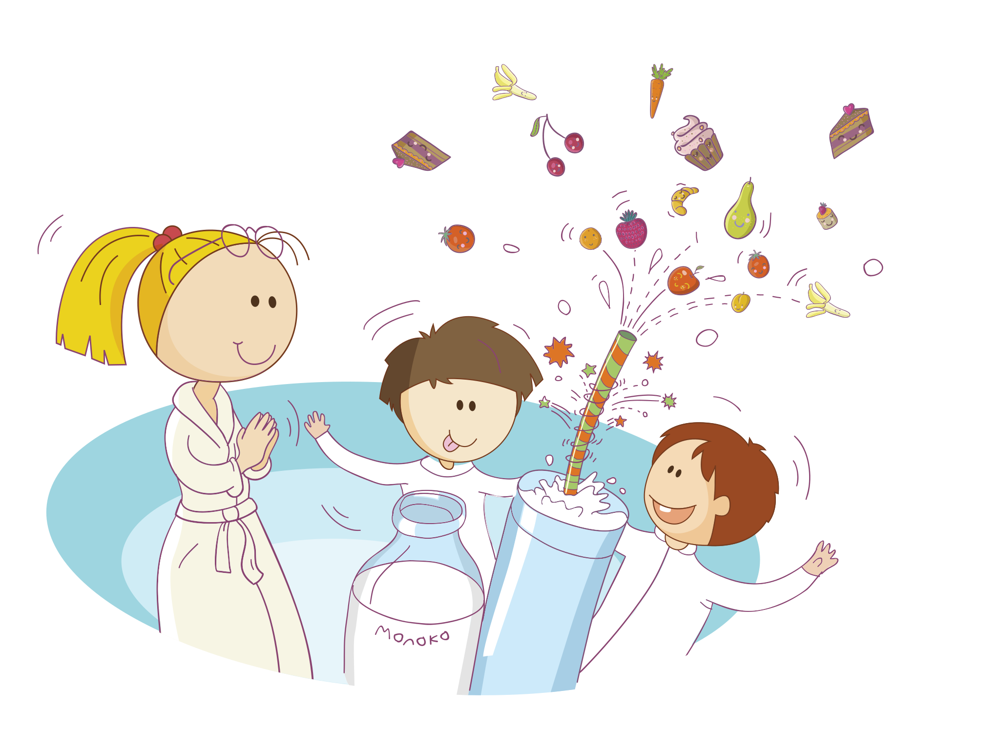

Волшебная соломинка «Magic Straw»
Дорогие друзья!
Наш сайт рассказывает об удивительном и необычном изобретении под названием «Волшебная соломинка». С помощью «Волшебной соломинки» каждый ребёнок может стать настоящим волшебником и превращать простое молоко в разнообразные вкусные напитки. Чудесная сила «Волшебной соломинки» так велика, что даже дети, которым молоко никогда не нравилось, начинают его пить с удовольствием.
Но и это ещё не всё.
«Волшебная соломинка» не только сделает молоко необычайно вкусным, но и вашу жизнь интересной и весёлой, потому что вас ждут увлекательные творческие конкурсы и розыгрыши призов.
Об этом и многом другом вы узнаете на нашем сайте.
Читайте! Пейте молоко с удовольствием! Участвуйте в волшебстве!